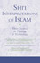
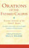

Ismaili Texts and Translation Series
Recent advances in Ismaili studies have been initiated by the recovery of Ismaili texts. A large number of such texts, written in Arabic, Persian and Indic languages, are preserved in the collections of The Institute of Ismaili Studies Library. The Ismaili Texts and Translations Series aims to produce critical editions together with English translations and contextualising introductions, which are essential for further progress in the field. This series was launched in 2000 and so far includes the following titles:
 |
The Founder of Cairo: The Fatimid Imam-caliph, al-Mu‘izz and his Era. An English translation of the text on al-Mu‘izz from Idris 'Imad al-Din's 'Uyun al-akhbar Translated with annotations by Dr Shainool Jiwa (Ismaili Texts and Translations Series, 21). |
 |
Tuhfat al-qulub: The Precious Gift of the Hearts and Good Cheer for Those in Distress. A critical edition of the Arabic text and summary English translation of Risalat Tuhfat al-qulub. Edited and Translated by Professor Abbas Hamdani (Ismaili Texts and Translations Series, 19). |
 |
The Early History of Ismaili Jurisprudence: Law Under the Fatimids. A critical edition of the arabic text and english translation of al-Qadi al-Nu'man's Minhaj al-fara’id. Edited and Translated by Professor Agostino Cilardo (Ismaili Texts and Translations Series, 18). |
 |
Between Reason and Revelation: Twin Wisdoms Reconciled. This is the first English translation of the final philosophical work of the great eleventh-century Ismaili thinker, poet, and Fatimid emissary, Nasir-i Khusraw. Edited and Translated by Professor Eric Ormsby (Ismaili Texts and Translations Series, 17). |
 |
Inside The Immaculate Portal: A History from Early Fatimid Archives. A new edition and English translation of Mansur al-Azizi al-Jawdhari's biography of al-Ustadh Jawdhar, the Sirat al-Ustadh Jawdhar. Edited and Translated by Hamid Haji (Ismaili Texts and Translations Series, 16). |
 |
A Code of Conduct: A Treatise on the Etiquette of the Fatimid Ismaili Mission. A critical edition of the Arabic text and English translation of Ahmad b. Ibrahim al-Naysaburi's al-Risala al-mujaza al-kafiya fi adab al-du'at. Edited and Translated by Verena Klemm and Paul E. Walker (Ismaili Texts and Translations Series, 15). |
 |
Mount of Knowledge, Sword of Eloquence: Collected Poems of an Ismaili Muslim scholar in Fatimid Egypt '. A translation from the original Arabic of al-Mu'ayyad al-Shirazi's Diwan by Mohamad Adra (Ismaili Texts and Translations Series, 14). |
|  | Nasir al-Din Tusi 'Shi‘i Interpretations of Islam: Three Treatises on Islamic Theology and Eschatology Shi‘i Interpretations of Islam: Three Treatises on Islamic Theology and Eschatology'. Persian critical edition and English translation of Tawalla wa tabarra, Matlub al-Mu'minin and Aghaz wa anjam by Dr Sayyad Jalal Badakhchani (Ismaili Texts and Translations Series, 13). |
 |
Taqi al-Din Ahmad b. 'Ali al-Maqrizi. 'Itti'az al-hunafa' bi-akhbar al-ai'mma al-Fatimiyyin al-khulafa'. Lessons for the Seekers of Truth on the History of the Fatimid Imams and Caliphs by Professor Ayman Fu’ad Sayyid. (Ismaili Texts and Translations Series, 12 a-d). |
 |
Taqi al-Din Ahmad b. 'Ali al-Maqrizi. 'Towards a Shi'i Mediterranean Empire: Fatimid Egypt and the Founding of Cairo'. The reign of the Imam-caliph al-Mu'izz from al-Maqrizi's Itti'az al-hunafa' bi-akhbar al-ai'mma al-Fatimiyyin al-khulafa by Shainool Jiwa. (Ismaili Texts and Translations Series, 11). |
|  | 'Orations of the Fatimid Caliphs: Festival Sermons of the Ismaili Imams'. An Edition of the Arabic Texts and English Translation of Khutbas by the Fatimids by Paul E. Walker. (Ismaili Texts and Translations Series, 10). |
 |
Hamid al-Din Ahmad b. 'Abd Allah al-Kirmani. 'Master of the Age: An Islamic Treatise on the Necessity of the Imamate'. A Ciritical Edition of the Arabic text and English Translation of al-Kirmani's al-Masabih fi ithbat al-imama by Paul E. Walker. (Ismaili Texts and Translations Series, 9). |
 |
Ahmad b. Ibrahim al-Naysaburi. 'Degrees of Excellence: A Fatimid Treatise on Leadership in Islam'. A new Arabic Edition and English Translation of al-Naysaburi's Ithbat al-imama by Arzina R. Lalani. (Ismaili Texts and Translations Series, 8). |
 |
Idris Imad al-Din b. al-Hasan. '‘Uyun al-akhbar wa-funun al-athar'. An Arabic critical edition in seven volumes, by Ahmad Chleilat, Mahmoud Fakhoury, Yousef S. Fattoum, Ma'moun al-Sagherji and Ayman Fu'ad Sayyid. (Ismaili Texts and Translations Series, 7a - 7g). |
 |
Al-Qadi al-Nu‘man. 'Founding the Fatimid State: The Rise of an Early Islamic Empire'. An English translation of Iftitah al-da‘wa (Commencement of the Mission) by Hamid Haji. (Ismaili Texts and Translations Series, 6). |
 |
Al-Tusi, Nasir al-Din. 'The Paradise of Submission.' A new Persian edition and English translation of the Rawda-yi Taslim by S J Badakhchani. (Ismaili Texts and Translations Series, 5). |
 |
Al-Din, Idris ‘Imad. 'The Fatimids and their Successors: The History of an Islamic Community'. Arabic edition and translation of the final volume of ‘Uyun al-Akhbar by Ayman Fouad Sayyid with an introduction by Paul E. Walker. (Ismaili Texts and Translations Series, 4). |
 |
Al-Yaman, Ja‘far b. Mansur. 'The Master and the Disciple: An Early Islamic Spiritual Dialogue'. Arabic edition and English translation of Kitab al-‘Alim wa’l Ghulam by James W Morris. (Ismaili Texts and Translations Series, 3). |
 |
Al-Shahrastani, Muhammad. 'Struggling with the Philosopher: A Refutation of Ibn Sina’s Metaphysics'. A new Arabic edition and English translation of Kitab al-Musara‘a by Wilferd Madelung and Toby Mayer. (Ismaili Texts and Translations Series, 2). |
 |
Ibn al-Haytham. 'The Advent of the Fatimids: A Contemporary Shi‘i Witness'. Arabic edition and English translation of Kitab al-Munazarat by Wilferd Madelung and Paul E. Walker. (Ismaili Texts and Translations Series, 1). |
Last updated: 12/07/2013 14:36
 Gateways
Gateways